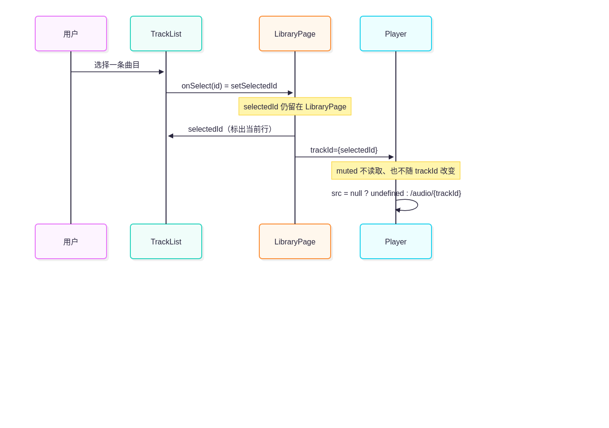
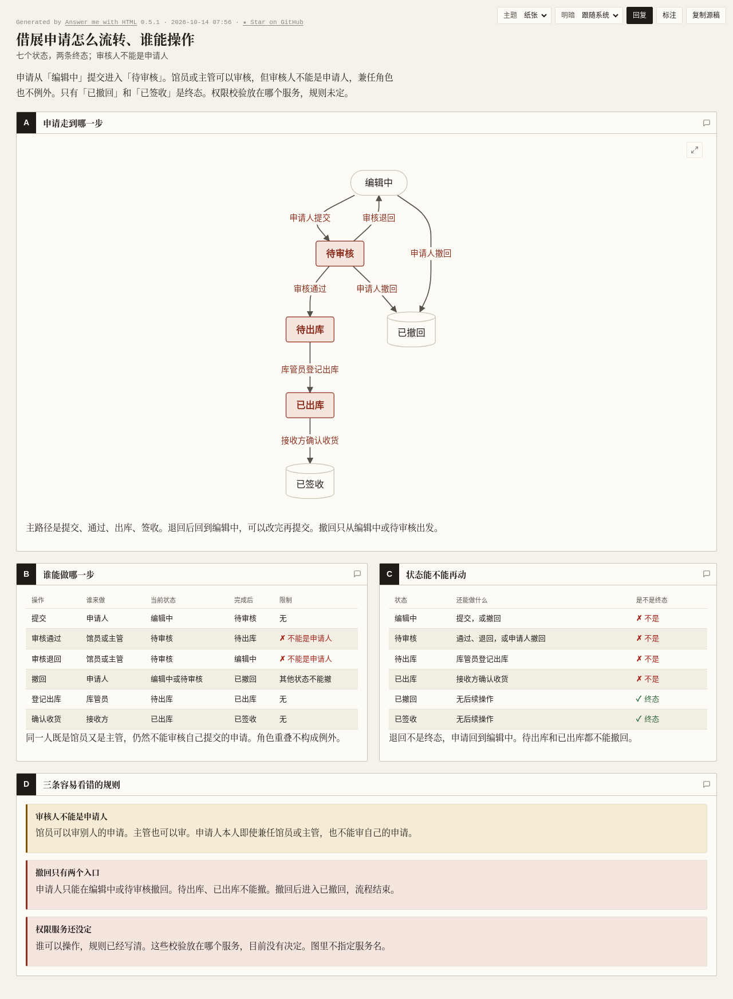
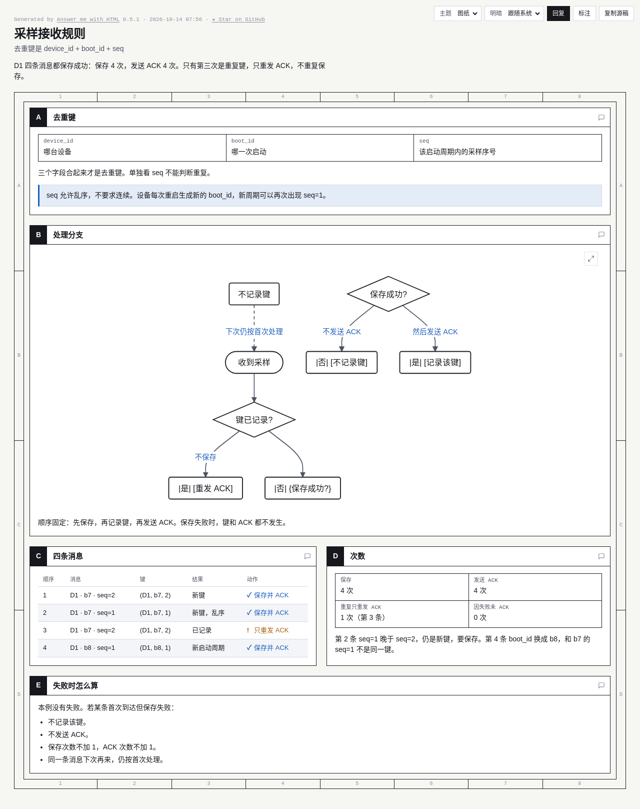
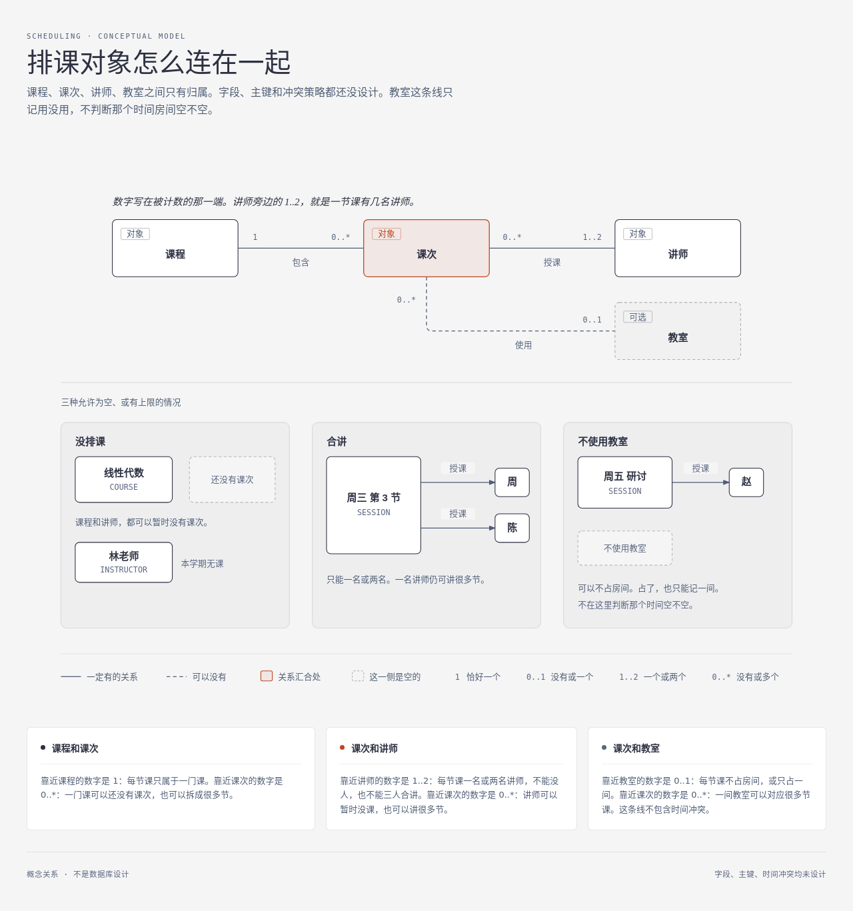
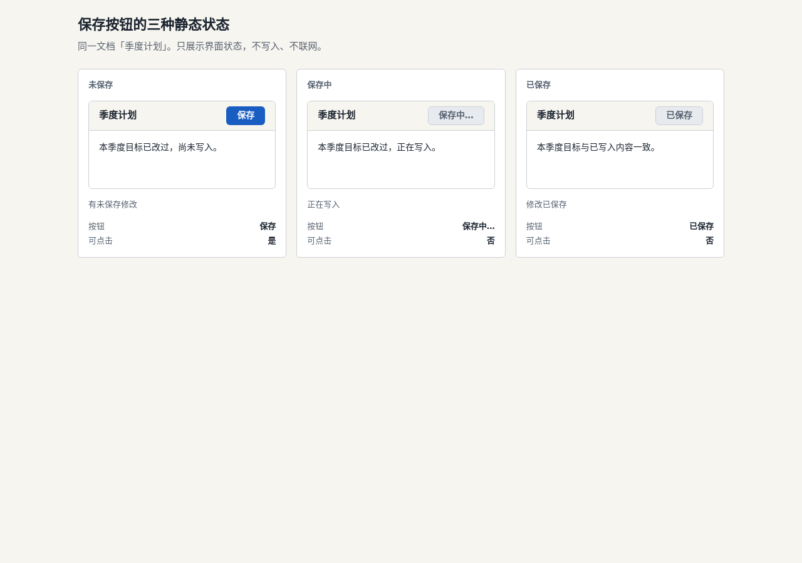
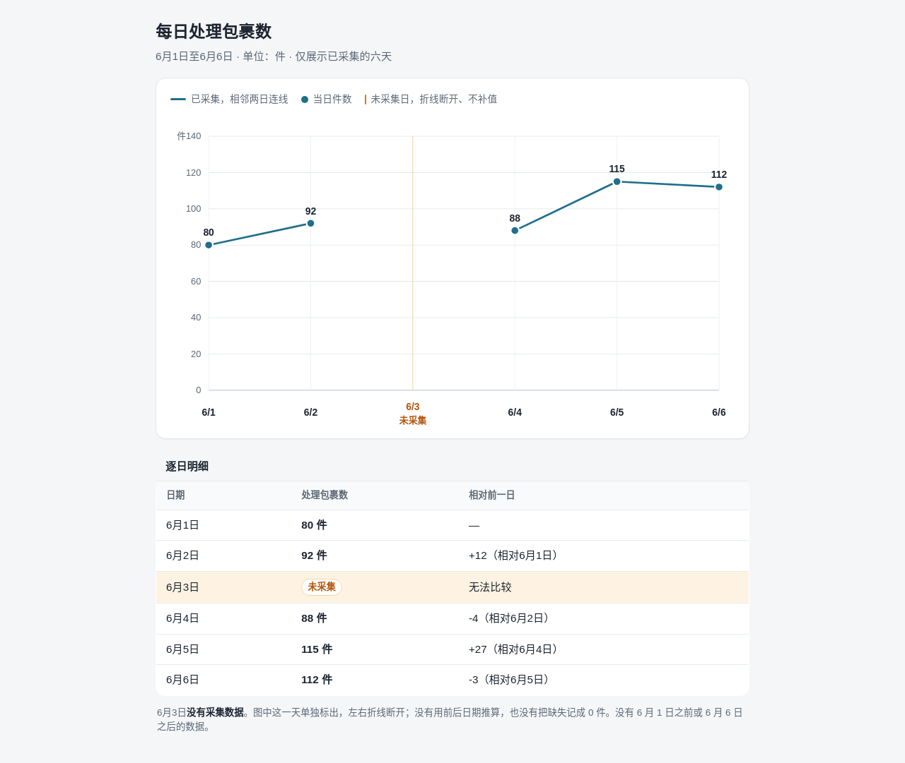
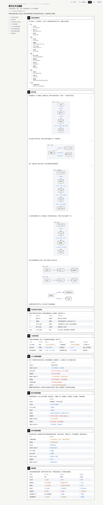
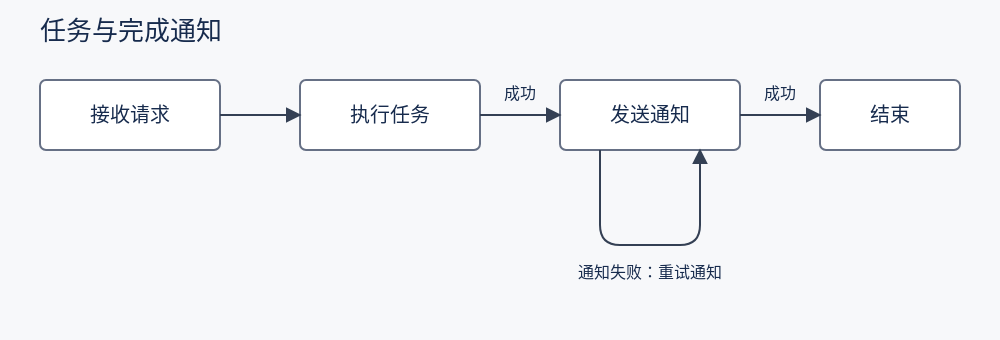

同一冻结 skill，OpenCode + Grok 4.7 high。16 + 5 + 3 = 24 次尝试；每次限时 900 秒。按最近一次展示，保留失败历史，不挑最好结果。
交付完成不代表质量合格。主代理非盲复核，无独立模型评分。
符合核心要求
紧凑 diff 正确表达 store → audit → acknowledge 和失败传播。
已有函数 ingest 的行为：先 decode(raw)；decode 抛错则直接向调用方抛出，不执行后续步骤。解码成功后调用 store(record)，store 成功后才调用 acknowledge(record.id)。现在只新增一项：store 成功后、acknowledge 之前调用 audit(record.id)。audit 失败时不 acknowledge，错误直接抛出。让同事一眼看清这次改动，简短一些。
`store` 成功之后、`acknowledge` 之前插入 `audit`。`audit` 失败则直接抛出，不调用 `acknowledge`。`decode` 和 `store` 的失败语义不变。 ```diff ingest(raw) record = decode(raw) # 抛错 → 直接抛出，后续不执行 store(record) # 成功后才继续 + audit(record.id) # 失败 → 不 acknowledge，直接抛出 acknowledge(record.id) ```
核心正确，表达重复
状态归属与选曲传递正确；组件树、状态表、时序图和正文重复解释相同关系。
音频库页面的代码在 /input/fixtures/LibraryPage.tsx。刚才这个结构，给我看看：选中曲目和静音分别由谁持有，列表选择怎样影响播放器？只依据这份代码解释，不修改代码。

选中曲目在 `LibraryPage`，静音在 `Player`。列表不直接操作播放器，只通过父组件的 `selectedId` 把曲目 id 传下去。
```tsx
<LibraryPage> (src/LibraryPage.tsx)
useTracks() → tracks
useState selectedId: string | null = null // 选中曲目：父组件持有
<TrackList> (packages/ui/TrackList)
tracks
selectedId
onSelect={setSelectedId}
<Player> (同文件，未导出)
trackId={selectedId} // 只接收，不持有
useState muted = false // 静音：Player 自己持有
<audio src muted controls>
<button> setMuted(v => !v)
```
| 状态 | 持有者 | 初值 | 谁改它 | 播放器怎么用 |
|---|---|---|---|---|
| `selectedId` | `LibraryPage` | `null` | `TrackList` 调用 `onSelect`，即 `setSelectedId` | 作为 `trackId` 传入 |
| `muted` | `Player` | `false` | 只有播放器里的按钮 | 直接作为 `<audio muted>` |
```mermaid
sequenceDiagram
participant User as 用户
participant List as TrackList
participant Page as LibraryPage
participant Player as Player
User->>List: 选择一条曲目
List->>Page: onSelect(id) = setSelectedId
Note over Page: selectedId 仍留在 LibraryPage
Page->>List: selectedId（标出当前行）
Page->>Player: trackId={selectedId}
Note over Player: muted 不读取、也不随 trackId 改变
Player->>Player: src = null ? undefined : /audio/{trackId}
```
换曲只改 `trackId`，从而改 `<audio>` 的 `src`：未选时 `src` 为 `undefined`，选中后是 `/audio/${trackId}`。`Player` 始终挂在树上，也没有 `key={trackId}`，所以换曲不会重新执行 `useState(false)`。静音留在 `Player` 内部，列表既读不到它，也不会在换曲时把它复位。符合核心要求
diff 保留数据库写入和两处入口，明确 CSV 读取与清洗迁移；比上一轮错误标记未变化职责更清楚。
当前目录有 cli/main.py（解析命令行）、core/importer.py（读取 CSV、清洗字段、写入数据库）、web/handler.py（调用 importer 接收网页上传）。计划把 importer 中的 CSV 读取移到 formats/csv_reader.py，把清洗移到 core/cleaner.py；数据库写入仍留在 importer，两处入口继续调用 importer。用紧凑的结构示意让同事看清哪些职责移动了、哪些不动。不实现重构。
当前目录没有源码，按题目给出的模块边界画职责移动示意。这种“哪些挪走、哪些留在原处”用 diff 形的文件树最紧凑。
```diff
cli/main.py # 仍只解析命令行，调用 importer
web/handler.py # 仍接收网页上传，调用 importer
core/importer.py # 编排入口保留：读 → 洗 → 写
- # 读取 CSV
- # 清洗字段
# 写入数据库 # 留在 importer
+ formats/csv_reader.py # 承接 CSV 读取
+ core/cleaner.py # 承接字段清洗
```
调用关系不变：`cli/main.py` 和 `web/handler.py` 都只进 `core/importer.py`。Importer 把读取交给 `formats/csv_reader.py`、清洗交给 `core/cleaner.py`，数据库写入仍由自己完成。代码检查通过，表达偏长
完整函数通过四组固定测试，包括空输入、大小写、空白和连续分组。未生成额外 HTML，比上一轮避免了错误附加图；伪代码、轨迹、函数、例子表仍重复。
新增一个 Python 函数 encode_runs(items)，把连续相同的字符串压成 (字符串, 连续次数) 元组，按原顺序返回列表。例如 ['a','a','b','a'] 返回 [('a',2),('b',1),('a',1)]，空列表返回 []。字符串比较区分大小写，也不去掉空白。让我看清逻辑并能直接复制函数使用，不写入仓库。
连续相同的字符串压成一段，段与段按原顺序排。比较用 `==`，区分大小写，空白也算字符，不合并不相邻的相同串。
```text
encode_runs(items)
if items is empty
return []
current ← items[0]
count ← 1
for each next item
if next == current
count ← count + 1
else
emit (current, count)
current ← next
count ← 1
emit (current, count)
```
以 `['a','a','b','a']` 为例：
```text
encode_runs
start run 'a'
'a' == 'a' → count 2
'b' != 'a' → emit ('a', 2)，另开 'b'
'a' != 'b' → emit ('b', 1)，另开 'a'
end → emit ('a', 1)
```
结果是 `[('a', 2), ('b', 1), ('a', 1)]`。空列表没有段，直接返回 `[]`。
```python
def encode_runs(items):
if not items:
return []
runs = []
current = items[0]
count = 1
for item in items[1:]:
if item == current:
count += 1
else:
runs.append((current, count))
current = item
count = 1
runs.append((current, count))
return runs
```
| 输入 | 输出 |
|---|---|
| `['a','a','b','a']` | `[('a', 2), ('b', 1), ('a', 1)]` |
| `[]` | `[]` |
| `['A','a','a']` | `[('A', 1), ('a', 2)]` |
| `['a ','a']` | `[('a ', 1), ('a', 1)]` |核心规则正确，有冗余与文字错误
保留禁自审、可撤回状态与终态，校验服务未知；页面副标题写七个状态，实际规则和图为六个。状态表和提示卡重复较多。
请让展馆业务同事看懂借展申请怎么流转、谁能操作。规则如下：申请从编辑中提交到待审核；馆员或主管可以审核，但审核人不能是申请人，兼任角色也不例外。通过进入待出库；退回进入编辑中。申请人在编辑中或待审核可以撤回，撤回后进入已撤回。库管员可把待出库申请登记为已出库；之后接收方确认收货，进入已签收。只有已撤回和已签收是终态。权限校验在哪个服务实现尚未决定。用你认为合适的图解说明。

借展申请从「编辑中」提交到「待审核」。馆员或主管可以审核，但审核人不能是申请人，兼任角色也不例外。只有「已撤回」和「已签收」是终态。 [file:///home/eval/.[skill]/pages/借展申请怎么流转-谁能操作-20261014-075616.html](file:///home/eval/.[skill]/pages/借展申请怎么流转-谁能操作-20261014-075616.html)
关键错误
最终回复、引言和统计写保存 4 次，正确应为保存 3 次、ACK 4 次；逐条表又写第三条只 ACK。浏览器确认 am flow 中混入的 |是|/|否| 被当成节点文本，首次与保存结果分支不连通。
给接入设备的同事解释这个接收规则。每条采样消息包含 device_id、boot_id、seq；三者合起来才是去重键。第一次收到该键时先保存采样，再返回 ACK；重复收到只重发 ACK，不重复保存。保存失败则不记录该键，也不发送 ACK，下次收到仍按首次处理。seq 允许乱序，不要求连续；设备每次重启会生成不同的 boot_id，因此新启动周期可以再次出现 seq=1。设备 D1 在启动周期 b7 收到 seq=2、seq=1、seq=2（都保存成功），随后在 b8 收到 seq=1（保存成功）。请画清处理分支，并用这段小例子帮助同事判断保存和 ACK 的次数。

D1 这四条消息都保存成功：保存 4 次，发送 ACK 4 次。去重键是 `device_id + boot_id + seq`。第三次 `(D1, b7, 2)` 已记录，只重发 ACK、不重复保存；第四次换成 `b8`，是新键，要再保存。 [file:///home/eval/.[skill]/pages/采样接收规则-20261014-075617.html](file:///home/eval/.[skill]/pages/采样接收规则-20261014-075617.html)
服务不可用，未完成；本轮无法评价 skill 质量
本轮服务端持续 HTTP 500，未开始工具执行。首轮残稿保留 8 个实例和双向交互，但标签遮挡、归档库需横向滚动；第一次补测服务流中断。至今未完成交付。
画给现场联调人员看的采集架构。东站、西站各有一台采集器、一个网关、一个缓冲库，都是独立实例。站内：采集器发送读数给本网关，网关读写本站缓冲库。中心有一个汇总服务和一个归档库。两站网关分别向汇总服务发送读数，汇总服务写归档库；汇总服务还分别向两站网关发出补传请求。需要能分清站点、实例和两种相反方向的交互。传输协议、认证、是否有消息队列均未决定，不替我设计。
完成，关系表达正确
898.23 秒、18 次请求。diagram-design 图稿清楚表达课程 1 ↔ 课次 0..*、课次 0..* ↔ 讲师 1..2、课次 0..* ↔ 教室 0..1；三个例子解释未排课、合讲和不用教室。手机需要图内横向滚动，本题未要求手机适配。一次修正基数的模型响应耗时 522 秒、输出 38513 token。
向排课人员解释以下对象关系，不需要数据库实现。一个课程可以暂时没有课次，也可以有多个课次；每个课次恰好属于一个课程。每个课次由 1 到 2 名讲师授课；一名讲师可以暂时没有课次，也可以讲多个课次。每个课次最多使用一个教室，也允许不使用教室；一个教室可以对应多个课次。这里的教室关系只记录归属，不说明时间冲突规则。字段、主键和排课冲突策略都尚未设计。用合适的关系图让人看清，尤其是没排课、合讲、不使用教室这三种情况。

课次是四者的汇合点。一门课可以还没有课次；一节课恰好属于一门课，由 1 到 2 名讲师讲，教室则可以不用。图在 `/work/scheduling-object-relations.html`。 数字写在被计数的那一端： | 关系 | 靠近这一侧 | 含义 | |---|---|---| | 课程 — 课次 | 课程是 1，课次是 0..\* | 每节课只属于一门课；一门课可以没课次，也可以有很多节 | | 课次 — 讲师 | 课次是 0..\*，讲师是 1..2 | 讲师可以没课，也可以讲很多节；每节课一名或两名，不能没人，也不能三人合讲 | | 课次 — 教室 | 课次是 0..\*，教室是 0..1 | 一间教室可对应很多节；每节课不占房间，或只占一间 | 下半页用三个例子把空的一侧画出来：线性代数还没有课次，林老师本学期无课；周三第 3 节由周、陈合讲；周五研讨只记了赵老师，不使用教室。教室这条线只记归属，不判断那个时间空不空。字段、主键和冲突策略都还没设计。
服务不可用，未完成；本轮无法评价 skill 质量
本轮服务端持续 HTTP 500，无新页面。前两次均超时：首轮残稿数值编码正确、手机需横向滚动；第一次补测残稿的 40 s / 1400 MB 末端刻度位置错误，手机条图文字过小。至今未完成交付。
给评审做一个中文、静态、单文件、离线可打开的 HTML，桌面和手机都能读。比较三种导出模式：标准模式耗时 32 s、峰值内存 640 MB；快速模式耗时 20 s、峰值内存 1200 MB；均衡模式耗时 28 s、峰值内存 960 MB。两项指标都越低越好。用图让人看清取舍，不能只放数字卡片或表格；没有权重，不要合成总分，也没有误差或样本量数据。
核心要求通过
桌面与手机均成功渲染，无页面横向溢出；文档名、文案、样式 token 和按钮 disabled 正确，点击没有保存网络请求。附加按钮/可点击摘要重复。
我们在讨论编辑器的保存体验，请做一个聚焦问题的单文件 HTML，在同一页比较三种静态状态，桌面和手机都能看：未保存时，按钮写“保存”且可点击，提示“有未保存修改”；保存中，按钮写“保存中…”且禁用，提示“正在写入”；已保存，按钮写“已保存”且禁用，提示“修改已保存”。每种状态都显示同一个文档名“季度计划”。沿用 /input/fixtures/editor-style.json 的产品样式。无需实现真实保存或联网。

页面已写好：`/work/answer.html`。 同一页并列三种静态状态，文档名都是「季度计划」： - **未保存**：按钮「保存」，可点击，提示「有未保存修改」 - **保存中**：按钮「保存中…」，已禁用，提示「正在写入」 - **已保存**：按钮「已保存」，已禁用，提示「修改已保存」 桌面三列、手机单列，都没有横向溢出。样式沿用产品配色，没有保存或联网逻辑。
数据正确，手机可读性不足
五个点位、日期与两段断线正确，缺失日没有补值或零点；离线可用。手机图内文字屏幕高度约 6–8 px。副标题误称已采集六天；表头相对前一日与 6 月 4 日实际对照 6 月 2 日不一致，单元格有注明对照日。
做一张中文趋势图，交付静态、单文件、离线 HTML，桌面和手机可读。某仓库 6 月 1 日至 6 月 6 日每日处理包裹数依次为：80、92、未采集、88、115、112，单位为件。读者要看清每日变化，也要知道哪天没有数据。没有其他日期的数据。不要预测、补值或给缺失值记零。

已做成离线单文件趋势图：`/work/answer.html`。 6月1日至6月6日的件数是 80、92、未采集、88、115、112。有数据的相邻日期连成两段折线；6月3日没有点、没有连线，也不记为 0。图下附有逐日明细，6月4日相对的是最近一次有数据的 6月2日（−4），没有拿缺失日做比较。
服务不可用，未完成；本轮无法评价 skill 质量
本轮服务端持续 HTTP 500，无新页面。前两次均超时且无 HTML；第一次补测单次响应耗时 729 秒，随后仅查询字体。没有可验证的交互产出。
做一个离线、单文件中文 HTML，让新同事通过操作理解重试等待时间。初次请求发生在 t=0；若失败，第 i 次重试前等待 min(b×2^(i-1), 10) 秒。让读者调整基础等待 b（1、2、3 秒）和重试次数 n（0 到 5 次，初次请求不算重试），看到各次请求的发生时刻和累计等待。默认 b=2、n=3。用图体现等待间隔，不能只更新一个总数；假设前面的请求都失败以便展示完整安排。无需真的发送网络请求。桌面和手机都能操作。
符合核心要求
一句话回答 165 分钟，没有图或额外文件。
只用一句话回答，不要图、表或代码块：2 小时 45 分钟是多少分钟？
2 小时 45 分钟等于 165 分钟。
符合核心要求
就地表格与公式给出 50/35/65 元，标准档最低，计算正确。
帮我理清这个虚构的内部配额方案，保持简洁。每月使用 480 次时，哪个方案费用最低？基础档每月 12 元含 100 次，超出每次 0.10 元；标准档每月 35 元含 500 次，超出每次 0.08 元；大额档每月 65 元含 1000 次，超出每次 0.05 元。额度不能跨月结转，没有其他费用。让我能核对你的判断。
**每月 480 次时，标准档最低：35 元。** 费用公式（额度不跨月、无其他费用）： ```text 费用 = 月费 + max(0, 使用次数 − 含次数) × 超出单价 ``` | 方案 | 月费 | 含次数 | 超出单价 | 超出次数 | 超出费用 | 合计 | |---|---:|---:|---:|---:|---:|---:| | 基础档 | 12 | 100 | 0.10 | 380 | 38.00 | **50** | | 标准档 | 35 | 500 | 0.08 | 0 | 0 | **35** | | 大额档 | 65 | 1000 | 0.05 | 0 | 0 | **65** | 核对：480 已超过基础档 100 次，但未超过标准档 500 次和大额档 1000 次，所以后两档只付月费。标准档比基础档少 15 元，比大额档少 30 元。
有完整产物，CLI 漏记最终回复；表达仍需改进
476.74 秒、42 次请求。服务端 response-042 正常 stop 并返回最终说明和链接，CLI 事件日志漏记末条文本。am 页面保留 14 个内部单元、状态顺序和主要失败规则；桌面高 6218 px，缺少紧凑关系总览，多张表重复。将存储之间的箭头用于表达先后、再靠文字说明实际发起方，削弱图的直观性；“索引成功前不可用/无本次结果”超出材料对索引写入可见性的保证。
数字化平台的说明在 /input/fixtures/digitization.md。请做一份图解：让新同事先快速看懂全貌，也让值班工程师查清 OCR、索引和邮件通知失败时分别影响哪里。原文列出的内部单元和已知关系需要能在相关视图中找到，允许按理解需要组织多个视图，不限定图种或文件格式。不要补充未确定的协议、队列、重试调度或故障处理入口。

新同事先看区域和八步主链。值班时按作业状态区分三条失败：OCR 失败停在「失败」，索引失败停在「待索引」且不重跑 OCR，邮件失败时作业仍是「已完成」，只重试发信。协议、队列、重试时刻和人工入口原文未定，图里没有补。 [file:///work/数字化平台图解.html](file:///work/数字化平台图解.html)
符合核心要求
SVG XML 解析和实际渲染通过。与原图仅失败环路坐标和标签不同；失败箭头回到发送通知，正常路径、其他文字和样式保持。
上一版图在 /input/fixtures/notification-flow.svg。规则更新：通知失败时只重试通知，不再重新执行任务。请直接基于这份图修改对应失败路径和标签，正常路径、其他文字及整体风格保持不变，交付修改后的 SVG。

已按新规则改好失败路径：通知失败时只回到「发送通知」重试，不再返回「执行任务」。正常路径和其他文字、样式未改。 文件：`/work/answer.svg`